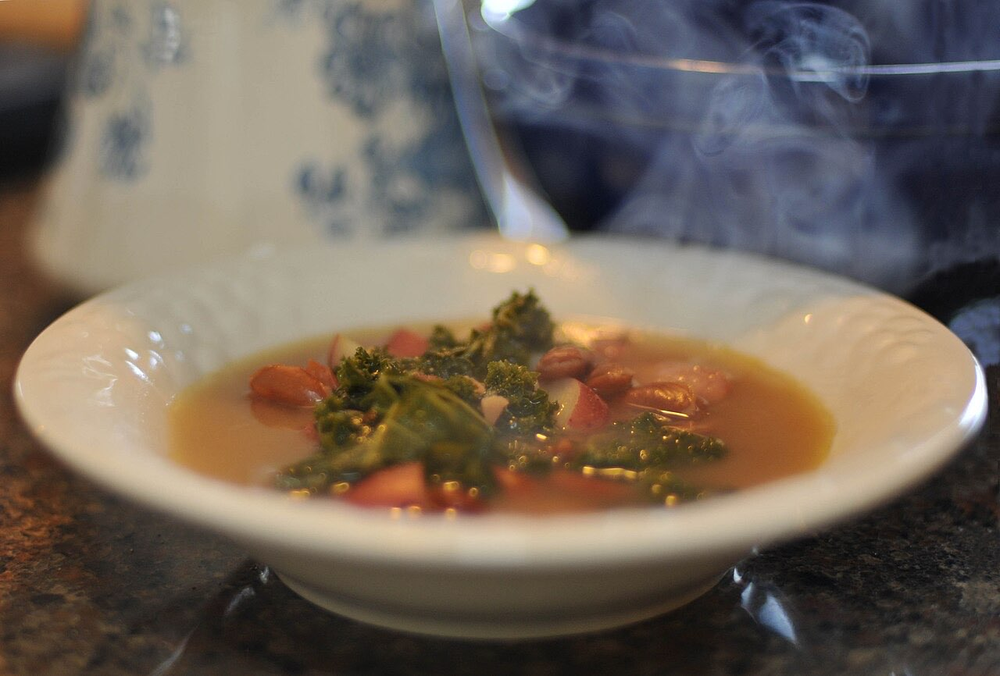
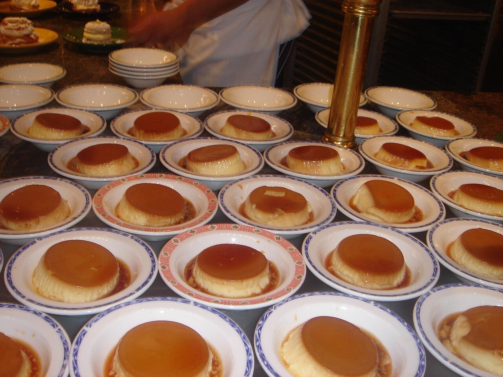

Fotografias ilustrativas — no site final usamos as vossas.
Restaurante · Centro
Apesar do nome, sem marisco
Apesar do nome, não é uma marisqueira.
4,7★ em 251 avaliações no Google.
Por QR code, sem esperar pela equipa.
A Marisqueira sem Marisco fica na Rua de Camões, no centro de Guimarães, e a graça começa no nome: não é uma marisqueira. Venha experimentar o menu do dia e descobrir a cozinha de Luís Brites.


Fotografias ilustrativas — no site final usamos as vossas.
Novo · Pedidos por QR code
Menos espera nas horas de ponta, menos enganos nos pedidos e a equipa livre para servir.
Pedido de reserva
Escolha o dia e a hora — o pedido chega por WhatsApp e confirmamos logo.
↑ Assim chegaria a mensagem ao vosso WhatsApp. (Nesta demonstração nada é enviado.)
Onde estamos
Proposta para A Marisqueira sem Marisco by Luís Brites
Esta página foi feita de propósito para A Marisqueira sem Marisco by Luís Brites por João Machado, programador web aqui de Guimarães. Inclui:
Eu trato do alojamento e da manutenção. Sem compromisso.